| Programa | Setup_InstitutoVisionEnAccion_v2.exe |
|---|---|
| Versión del instalador | Segunda versión (Inno Setup 6) |
| Versión del sistema | 2.0.0 |
| Fecha | Noviembre de 2026 |
Este documento explica cómo usar Setup_InstitutoVisionEnAccion_v2.exe, la segunda versión (2.0.0) del
instalador del sistema Instituto Visión en Acción. La primera versión (v1, 1.0.8) solo copiaba los archivos del programa:
la base de datos se configuraba después, desde la propia aplicación (ver sección 5). De la v1 también existe un paquete MSI
generado con el proyecto de instalación de Visual Studio (Solucion_83KI).
La segunda versión es un único programa que cumple dos funciones:
El mismo instalador se puede ejecutar todas las veces que haga falta: nunca duplica ni pisa los datos existentes.
| Requisito | Detalle |
|---|---|
| Sistema operativo | Windows de 64 bits. |
| Permisos | Usuario administrador. Windows pide confirmación al iniciar el instalador. |
| .NET Framework | 4.7.2 o superior. Si no está, el instalador avisa y pregunta si continúa. |
| Motor de base de datos | SQL Server 2016 SP1 o superior, o SQL Server LocalDB, con autenticación integrada de Windows. |
Herramienta sqlcmd | Tiene que estar en el PATH (se instala con SQL Server o con sus herramientas de línea de comandos).
Sin sqlcmd la aplicación se instala igual, pero la base no se crea ni se actualiza. |
| Ubicación | Contenido |
|---|---|
C:\Program Files\InstitutoVisionEnAccion | La aplicación (UI.exe), sus bibliotecas, los idiomas y los scripts que usa la pantalla de configuración. |
...\InstitutoVisionEnAccion\Database | Scripts de base de datos, por si hay que ejecutarlos a mano:
Deploy_InstitutoVisionEnAccion.sql, Backup_Previo.sql, Restaurar_Base.sql y ConfigurarConexion.ps1. |
C:\ProgramData\InstitutoVisionEnAccion\Backups | Copias de seguridad de la base (.bak). Una por cada reinstalación. |
C:\ProgramData\InstitutoVisionEnAccion\Logs | Resultado de cada paso: Backup.log, Restore.log, Deploy.log y Config.log. |
Registro: HKLM\Software\InstitutoVisionEnAccion | Carpeta de instalación, versión, instancia de SQL Server y nombre de la base. El instalador lo usa para saber si es una reinstalación. |
| Menú Inicio y escritorio | Acceso directo a la aplicación (el del escritorio es opcional) y acceso para desinstalar. |
Las copias de seguridad se guardan en ProgramData y no dentro de Program Files porque el
archivo .bak lo escribe el servicio de SQL Server, que no tiene permiso para escribir en Program Files.
Este es el recorrido de Setup_InstitutoVisionEnAccion_v2.exe en una PC donde el sistema no estaba instalado.
Las páginas «Carpeta de destino», «Tareas adicionales» y «Listo para instalar» son las mismas que en la v1
(figuras 1 a 3 de la sección 5); la diferencia es que la v2 agrega la página «Base de datos».
Setup_InstitutoVisionEnAccion_v2.exe y aceptar el aviso de administrador de Windows.., las que tienen nombre como .\NOMBRE y al final
siempre está (localdb)\MSSQLLocalDB. También se puede escribir otra.InstitutoVisionEnAccion) o escribir otro. Solo admite letras, números y guion bajo.El instalador de la v1 solo copia la aplicación y crea los accesos directos. No prepara la base de datos.
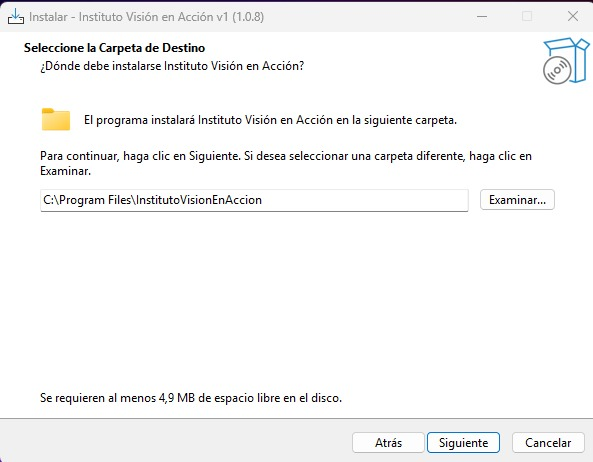
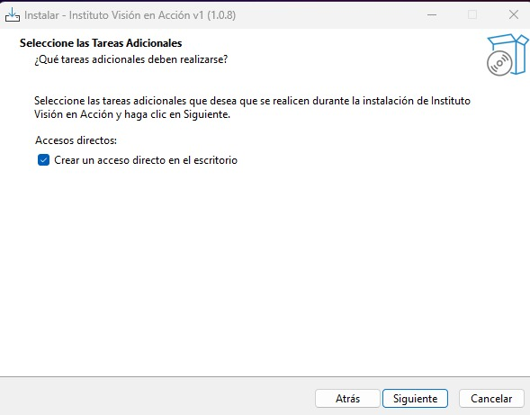
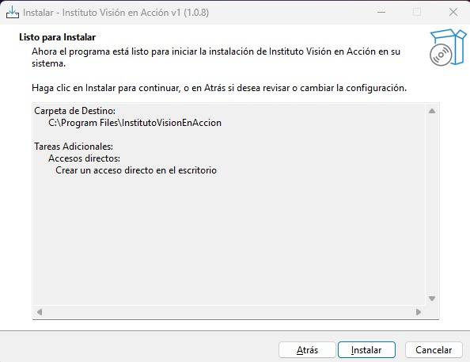
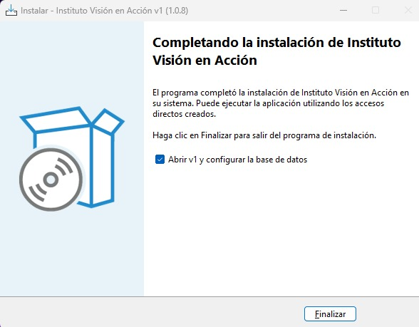
Como la v1 no deja la conexión guardada, al abrir la aplicación aparece la pantalla «Configuración Inicial de Base de Datos». La misma pantalla aparece en la v2 si no se pudo guardar la conexión (ver sección 10).
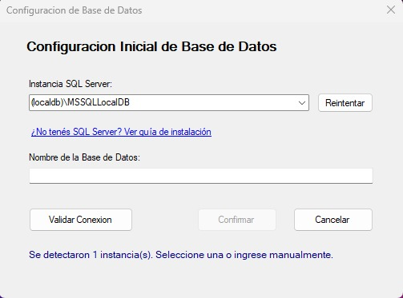
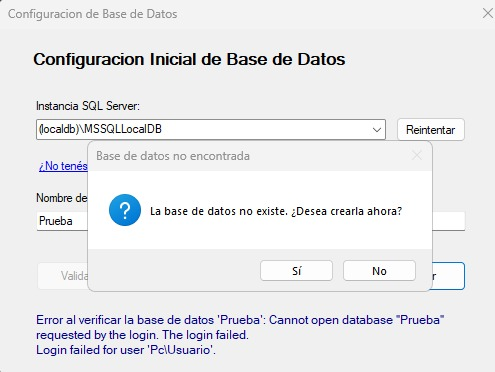
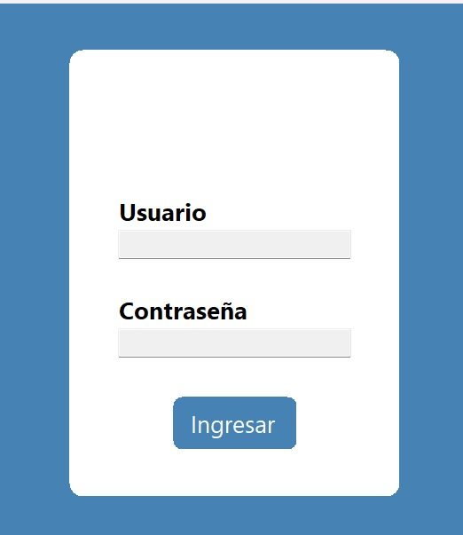
Setup_InstitutoVisionEnAccion_v2.exe.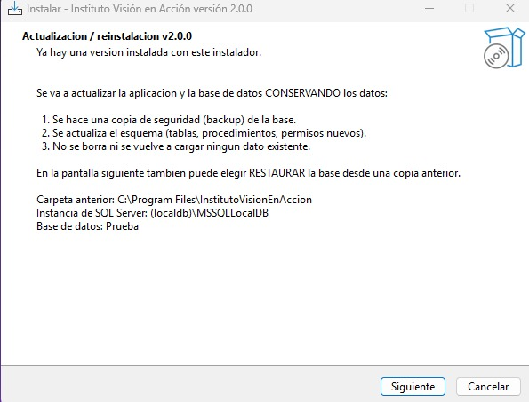
Solucion_83KI)Cuando el sistema ya fue instalado con este instalador, al ejecutarlo de nuevo funciona como reinstalador. Reutiliza la carpeta, la instancia y la base de la instalación anterior, así que no vuelve a preguntarlas.
C:\ProgramData\InstitutoVisionEnAccion\Backups, de la más nueva a la más vieja. El nombre de cada
archivo incluye la fecha y la hora en que se hizo. Con Examinar... se puede elegir un archivo de otra carpeta.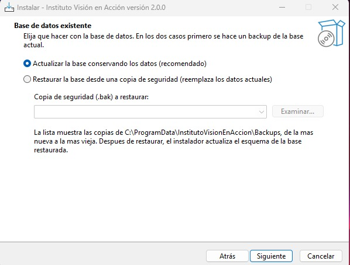
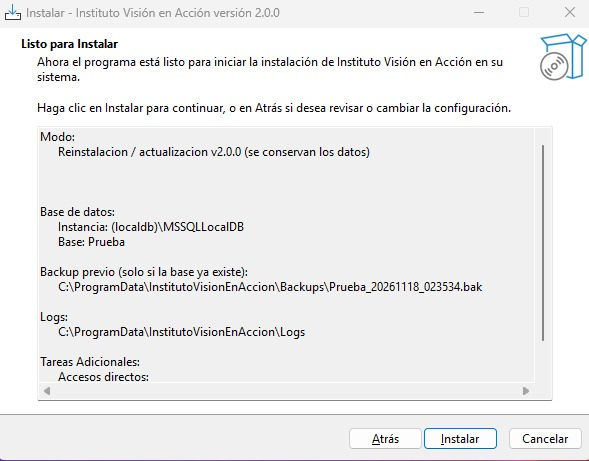
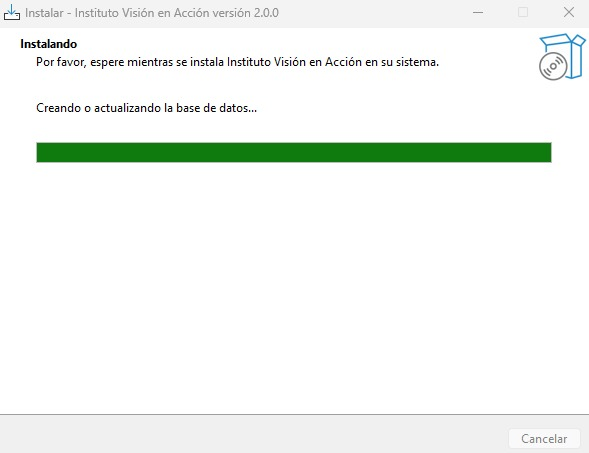
La copia a restaurar tiene que haber sido hecha en la misma instancia de SQL Server (por ejemplo, cualquiera de las que genera el propio instalador).
Durante la instalación se ejecutan estos pasos, en este orden. Cada uno deja su resultado en un archivo de log con una marca que el instalador verifica antes de seguir.
| N.º | Paso | Qué hace | Marca en el log |
|---|---|---|---|
| 1 | Copia de seguridad | Si la base existe, hace un backup completo en la carpeta Backups.
Si no se puede escribir ahí, lo reintenta en la carpeta de backups de la instancia. Si la base no existe, no hace nada. |
BACKUP_OKBACKUP_OK_CARPETA_SQLBACKUP_SIN_BASE |
| 2 | Restauración (solo si se eligió) | Verifica que el archivo sea una copia válida, cierra las conexiones abiertas y restaura la base desde esa copia. | RESTORE_OK |
| 3 | Preparación o actualización | Crea la base si no existe y aplica el esquema completo (ver abajo). | DEPLOY_OK |
| 4 | Conexión | Guarda la instancia y la base en UI.exe.config para que la aplicación abra directamente. | CONFIG_OK |
Si un paso falla, los siguientes no se ejecutan: sin copia de seguridad correcta no se restaura ni se actualiza nada. En ese caso el instalador muestra el error, la ruta del log y el comando para repetir el paso a mano. La aplicación queda instalada igual.
Deploy_InstitutoVisionEnAccion.sql es un único script que sirve tanto para una base nueva como para una existente:
dbo.Usuarios.El script se genera con Instalador\GenerarDeploy.ps1 a partir de los scripts del proyecto
(Scripts\Sql\EsquemaCompleto.sql y sus migraciones), en el mismo orden que usa la aplicación.
Desde «Aplicaciones instaladas» de Windows o desde el acceso «Desinstalar Instituto Visión en Acción» del menú Inicio.
C:\ProgramData\InstitutoVisionEnAccion.Por eso, si se vuelve a instalar apuntando a la misma instancia y base, el sistema recupera todos sus datos.
El instalador se puede ejecutar sin pantallas, por ejemplo para pruebas automáticas. Hay que abrir la consola como administrador.
Setup_InstitutoVisionEnAccion_v2.exe /VERYSILENT /SUPPRESSMSGBOXES /Instancia="(localdb)\MSSQLLocalDB" /Base=InstitutoVisionEnAccion
| Parámetro | Significado |
|---|---|
/Instancia="..." | Instancia de SQL Server. Reemplaza a la que se elige en la página «Base de datos». |
/Base=Nombre | Nombre de la base de datos. |
/Restaurar="ruta.bak" | Solo en la reinstalación: restaura la base desde esa copia de seguridad. |
/LOG="archivo" | Guarda el registro detallado del instalador. |
En modo desatendido el instalador no desinstala la primera versión (Solucion_83KI), porque eso requiere confirmación.
| Situación | Qué hacer |
|---|---|
| «No se encontró sqlcmd en el PATH» | Instalar las herramientas de línea de comandos de SQL Server y volver a ejecutar el instalador. Otra opción es continuar: la aplicación se instala y la base se puede crear desde la pantalla de configuración que muestra la aplicación al abrir. |
| «No se pudo conectar» al probar la conexión | Verificar que el servicio de SQL Server esté iniciado, que el nombre de la instancia sea correcto y que el usuario de Windows tenga acceso. |
| No se pudo hacer la copia de seguridad | La base no se modifica. Revisar Logs\Backup.log; lo más habitual es que el servicio de SQL Server
no tenga permiso sobre la carpeta de destino. |
| No se pudo restaurar | La base no se actualiza. Revisar Logs\Restore.log. La copia de la base que había antes está en la carpeta Backups. |
| La base no se pudo crear o actualizar | No se aplicó ningún cambio. Revisar Logs\Deploy.log, corregir la causa y repetir con el comando de abajo. |
| La aplicación abre la pantalla de configuración en vez del inicio de sesión | Elegir ahí la instancia y la base. Ocurre si no se pudo guardar la conexión
(ver Logs\Config.log) o si ese usuario de Windows ya tenía guardada otra configuración. |
Se ejecutan desde C:\Program Files\InstitutoVisionEnAccion\Database, reemplazando la instancia y la base.
Crear o actualizar la base:
sqlcmd -S "." -E -b -I -l 30 -f 65001 -v BaseDatos="InstitutoVisionEnAccion" -i Deploy_InstitutoVisionEnAccion.sql
Hacer una copia de seguridad:
sqlcmd -S "." -E -b -l 30 -v BaseDatos="InstitutoVisionEnAccion" CarpetaBackup="C:\ProgramData\InstitutoVisionEnAccion\Backups" ArchivoBackup="copia.bak" -i Backup_Previo.sql
Restaurar una copia de seguridad:
sqlcmd -S "." -E -b -l 30 -v BaseDatos="InstitutoVisionEnAccion" ArchivoBak="C:\ProgramData\InstitutoVisionEnAccion\Backups\copia.bak" -i Restaurar_Base.sql
Las pruebas se hicieron en SQL Server LocalDB 2019, siempre sobre bases descartables con otro nombre; la base real no se modificó.
| N.º | Caso | Resultado obtenido |
|---|---|---|
| 1 | Instalación por primera vez | Correcto. Base creada (BACKUP_SIN_BASE, DEPLOY_OK), conexión guardada (CONFIG_OK) y clave de Registro escrita. |
| 2 | Reinstalación con actualización | Correcto. Copia de seguridad hecha (BACKUP_OK) y esquema actualizado. Cantidad de filas, sumas de control por tabla y dígitos verificadores idénticos antes y después. |
| 3 | Reinstalación con restauración | Correcto. Se agregó una tabla de marca a la base, se reinstaló restaurando la copia del caso 2 y la marca desapareció (BACKUP_OK, RESTORE_OK, DEPLOY_OK). |
| 4 | Desinstalación | Correcto. Se borraron la carpeta de la aplicación y la clave de Registro; la base y las copias de seguridad se conservaron. |
| N.º | Caso | Resultado obtenido |
|---|---|---|
| 5 | Deploy sobre una base inexistente | Correcto: 32 tablas y 37 procedimientos, con los datos iniciales. |
| 6 | Deploy ejecutado dos veces seguidas | Correcto: el segundo resultado es idéntico al primero. |
| 7 | Deploy sobre una copia de la base de la primera versión (13 tablas) | Correcto: las tablas con datos no cambiaron; solo se agregaron los permisos nuevos y las tablas que faltaban. El esquema final coincide con el de una instalación nueva. |
| 8 | Error provocado a mitad del Deploy | Correcto: se revirtió todo y no se imprimió DEPLOY_OK. |
| 9 | Copia de seguridad con carpeta inválida | Correcto: reintentó en la carpeta de la instancia (BACKUP_OK_CARPETA_SQL). |
| 10 | Restauración con un archivo que no es una copia | Correcto: falló sin modificar la base, que quedó accesible. |
| 11 | Aplicación con la conexión escrita por el instalador | Correcto: abre directamente la pantalla de inicio de sesión. |
| N.º | Caso | Resultado obtenido |
|---|---|---|
| 12 | Instalación de la v1 (1.0.8) y configuración de la base desde la aplicación | Recorrido completo hasta la pantalla de inicio de sesión, con una base nueva en LocalDB (figuras 1 a 7). |
| 13 | Actualización de v1 a v2 (2.0.0) actualizando la base | El instalador detectó la v1, reutilizó la instancia y la base configuradas, programó el backup previo y pasó a actualizar la base (figuras 8 a 11). |
Solucion_83KI) desde el asistente.Desde la raíz del repositorio, con Inno Setup 6 instalado:
powershell -ExecutionPolicy Bypass -File Instalador\GenerarDeploy.ps1
dotnet build "Solucion.sln" -c Release
"%LOCALAPPDATA%\Programs\Inno Setup 6\ISCC.exe" /Q Instalador\Setup_InstitutoVisionEnAccion.iss
El resultado queda en Instalador\Salida\Setup_InstitutoVisionEnAccion_v2.exe.